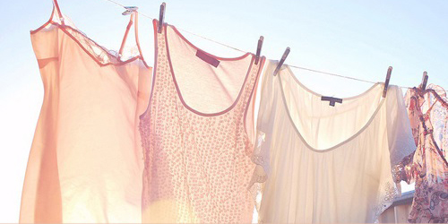

| Dry Clean From basic wardrobe essentials to designer suits and dresses, our staff is experienced in caring for even the most delicate of garments.
|
|  | Laundry Nothing beats a crisp, freshly pressed dress shirt. From military creases to french cuffs and tuxedo shirts, our staff will make you look your best for every occasion. We also offer boxing services to make travel easy and convenient. Instead of being returned on a hanger, boxed shirts are returned individually bagged and folded. |
| Alterations We offer a complete range of alteration and tailoring services. Do you have something in your closet that doesn't fit properly? Bring your garments into our shop and we will be glad to make sure they fit perfectly. We offer quick turnaround, with rush orders and drop-ins welcome. |
| Wedding Gown Services Turn the memory of your special day into an heirloom. Perhaps someday your daughter or granddaughter will walk down the aisle wearing the same bridal gown that meant so much to you. Keep your bridal gown in the family the right way with the gown preservation service you can trust! |